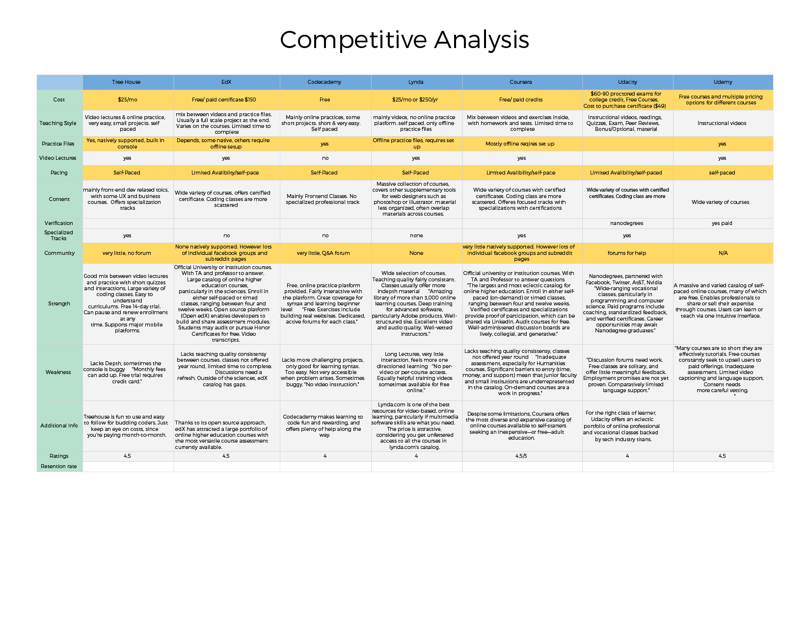

June is a website that is a website that is reinventing the hiring process for professionals in the technology industry. The website aims to reward programmers to listen to recruiters’ job offers. My role on this project was UX design on a team of one other UX designer. The goal was to improve the usability of the site and to make sure that the users understood the unique approach June had to the hiring process.
June
In order to improve the site, we first performed a heuristic evaluation to see if there was any usability standards that June failed to meet. From our evaluation, we discovered that June had little guidance for the user, had no confirmations for actions, and no error prevention. We also found that the information architecture was unclear.
To validate that the assumptions from the heuristic evaluation were a concern, we conducted several usability tests followed by a series of follow up questions. Our users were people that worked in the technology industry. We had the users perform a set a tasks.

One of the main problems we found was that users were confused at the structure and organization of the site. To solve this problem, we used card sorting in order to gain an understanding of the end user’s mental model of the site.
Persona 1 - The Social Learner
Through affinity diagraming with the information obtained through the usability tests, we created four design principles that would both help the user’s needs and represent the spirit of June’s goal.

We individually created wireframes that worked to solve the usability issues that also followed the design principles. After doing separate usability tests, we A B tested the two concepts against each other. In the end, we combined features that tested well from each wireframe into one prototype and fixed any potential problem areas that were important to include.
Our solution was to place users in small groups that would start at a designated week, but the users could complete the material at the course at their own pace. I also designed the huddle button interaction that allowed users to have a central focus for all the group interactions and remind them that they were not alone when going through the course.
After rapid prototyping, which involved three rounds of testing and iterating, I created the final prototype in Axure to demonstrate to the client as a solution to his website’s usability issue.